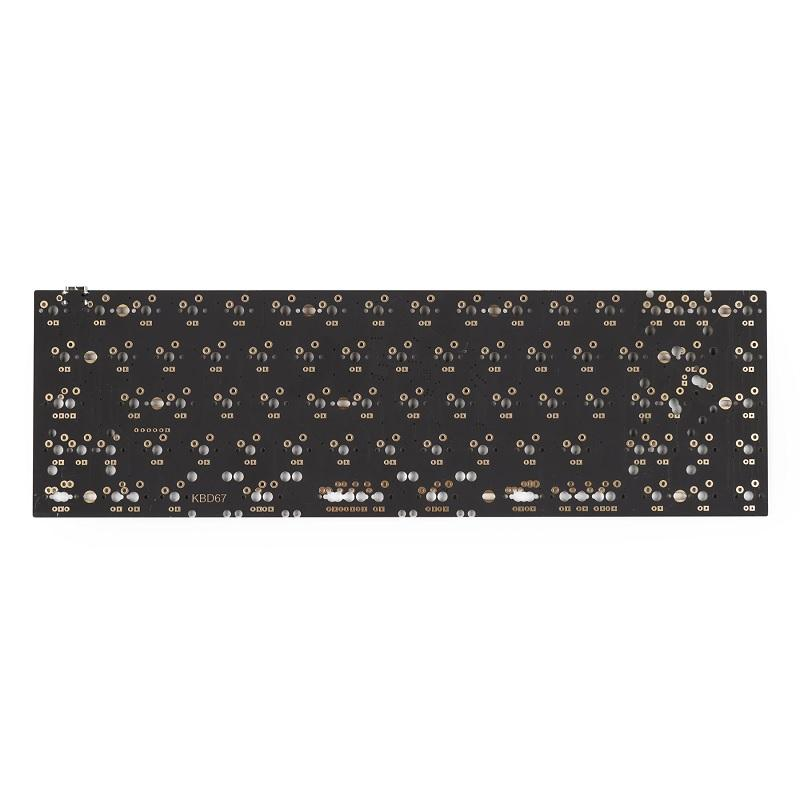
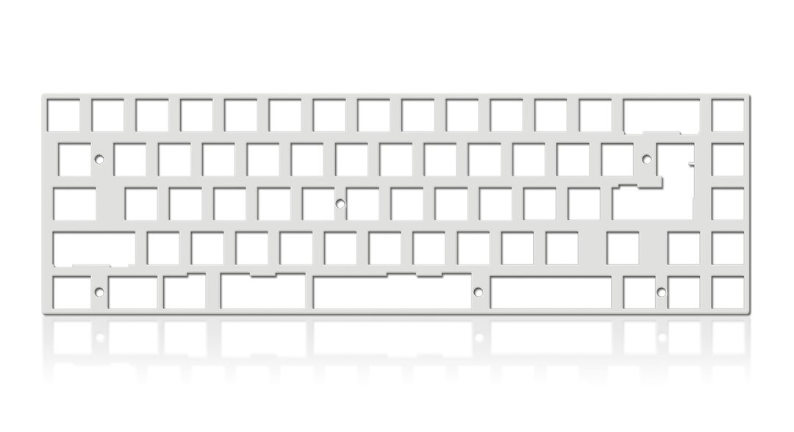
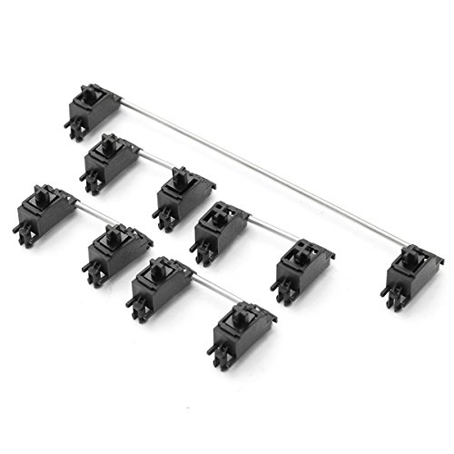
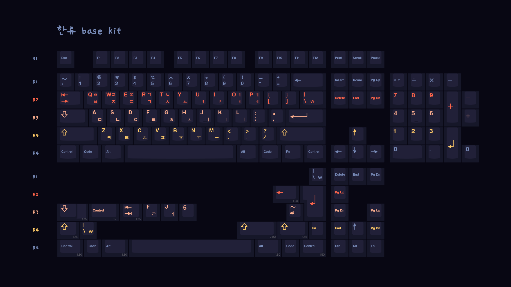
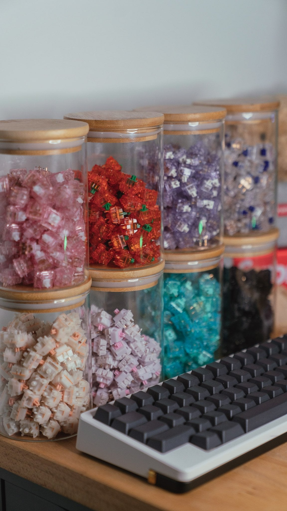
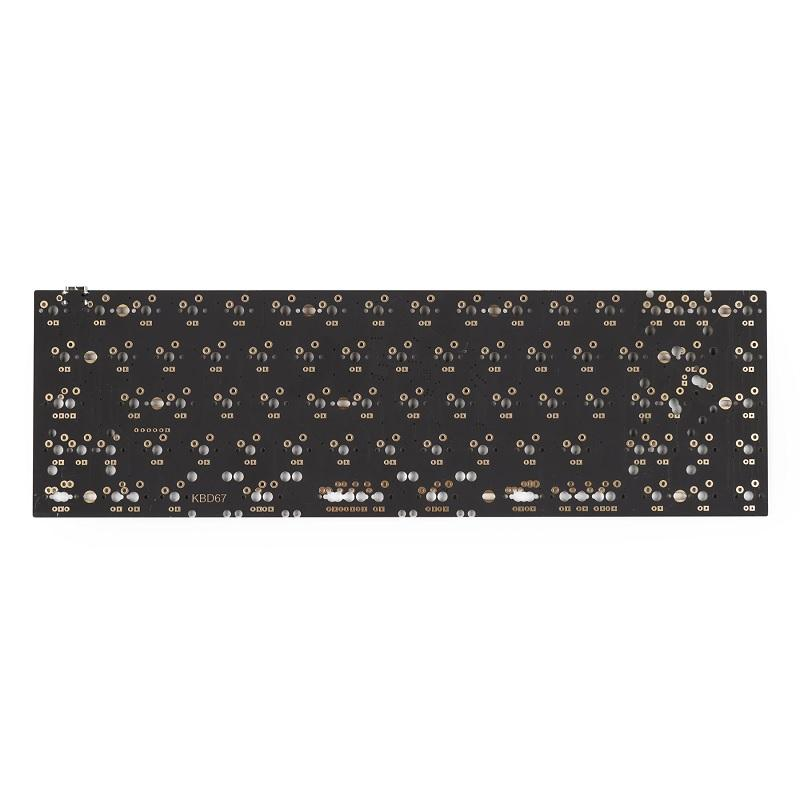
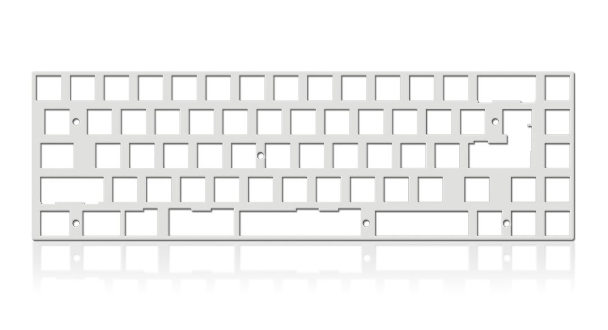
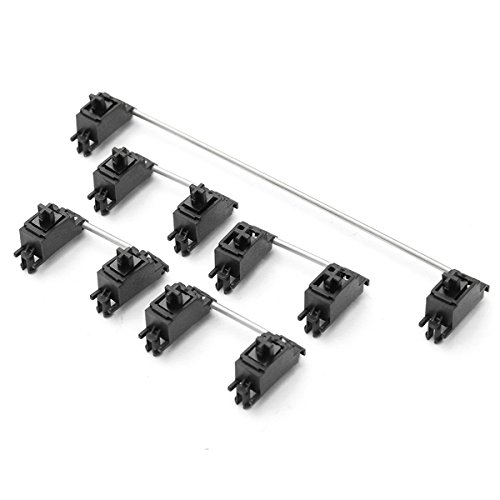
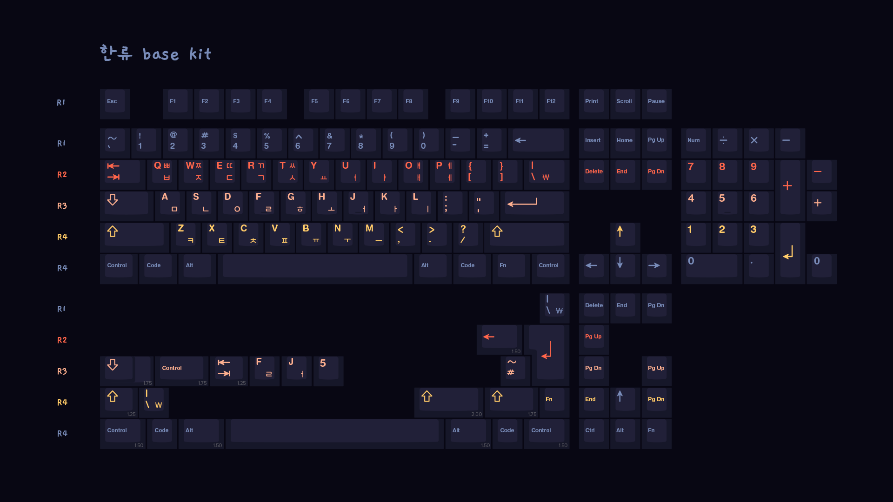
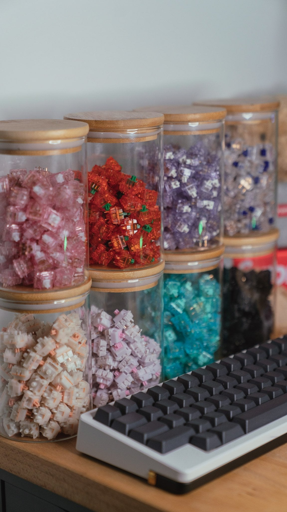

Many of have jobs that require us to sit in front of a computer screen using our keyboards for hours. So wouldn't it be nice to have a custom keyboard that is catered to your personality and sound preference? There is a diverse set of keycaps, sounds, and feel that can make your typing experience that much better on a daily basis. However, be careful of the rabbit hole custom keyboards can create as entry level boards can easily reach $100. Before we get into the nitty gritty details of building process, if you ever hear of an endgame keyboard, that is false. There is no endgame..
Here is what is required to build a keyboard: keyboard 65% case, 65% PCB, plate, stabilizers, keycaps, roughly 70 switches, soldering iron, and solder. What is optional but recommended are: lube (krytox 205-g0 is most commonly used), switch opener, switch puller, desoldering pump (in the case you want to change the keyboard layout or mess up soldering a switch). Although most 65% keyboards use about 67 switches, it is recommended to always buy slightly more. This is in the case that you accidentally break a pin off the switch or lose one.
 








